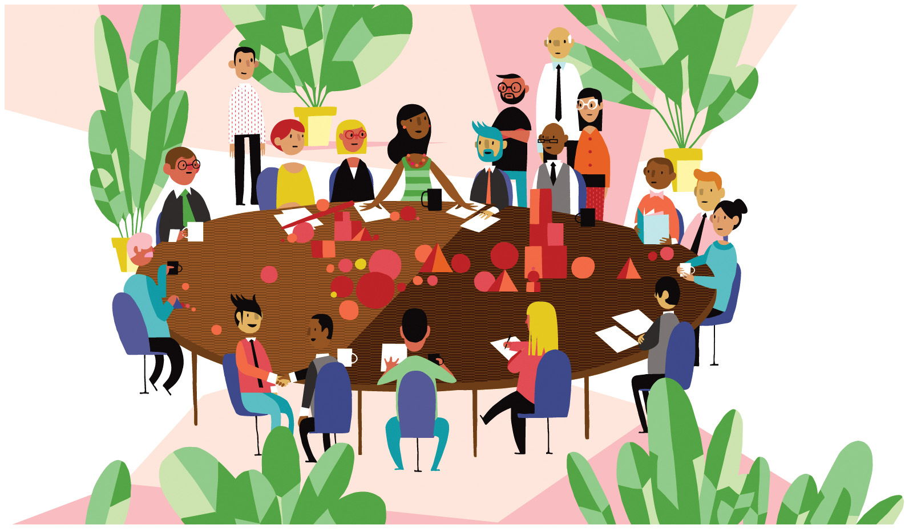

Groups¶
This lesson explores some of the different ways we organize our lives in groups. Here you will gain some of the analytic tools you can use to understand the specific groups we’ll be investigating later in the semester. Concepts such as peer pressure, teamwork, bureaucratization, and anomie can be fruitfully applied to analyses of families, work and volunteer organizations, political groups, and religious communities. Consider this lesson an introduction to group dynamics in general—a springboard from which to begin our sociological analysis of particular types of groups. During the week, think about the groups you belong to and how they affect your values and behavior.
Learning Objectives¶
By the end of this lesson, you will be able to:
Describe how sociologists define groups, organizations and networks.
Distinguish between theoretical perspectives on groups.
Analyze how personal identity is related to groups.
Deadlines¶
Be sure to hand these in before the deadline
Inquizitive Chapter 5 (Thursday at 9:30am)
Breaching application (Sunday at 11:55pm)
Jonestown reflection (Sunday at 11:55pm)

Watch¶
Class Lecture Live on Tuesday at 9:45am.

Politics (Just the parts about power and authority.)
Discuss: Jonestown¶

award-winning filmmakers Stanley Nelson, Marcia Smith, and Noland Walker reveal the true, tragic story behind enigmatic preacher Jim Jones and his promise of a world of economic and racial equality that ultimately led to the largest mass murder-suicide in history. This documentary tells the story of the people who joined Peoples Temple, following Jones from Indiana to California and ultimately to their deaths in Guyana in November 1978. PBS
We will use the documentary film Jonestown: the life and death of Peoples Temple as an opportunity to identify and evaluate concepts related to the sociology of groups. We will watch it together during class.
Be sure to have the movie ready to go at the start of class.
Login to the course Slack by 9:45am and say hi to your group!
Before Thursday, start thinking about what concepts are likely to be most relevant.
Questions¶
If you have any questions at all about what you are supposed to do on this assignment, please remember I am here to help. Reach out any time so I can support your success.
Post it in the Slack #questions channel!
Signup for virtual office hours!
Email me or your TA.
Lesson Keywords¶
group
crowd
aggregates
category
primary groups
secondary groups
social network
social ties
strong ties
weak ties
anomie
group dynamics
in-group
out-group
reference group
groupthink
social influence
asch experiment
social identity theory
power
coercive power
authority
traditional authority
legal-rational authority
charismatic authority
instrumental leadership
expressive leadership
bureaucracy
rationalization
McDonaldization\
Extra Resources¶
Conformity and groupthink (Khan Academy)
Conformity and obedience (Khan Academy)
Asch conformity studies (Khan Academy)
Events that inspired the Milgram studies on obedience (Khan Academy)
Milgram experiment on obedience (Khan Academy)
What can we learn from the Milgram experiment (Khan Academy)
Zimbardo prison study The Stanford prison experiment (Khan Academy)
A closer look at the Stanford prison experiment (Khan Academy)
Factors that influence obedience and conformity (Khan Academy)